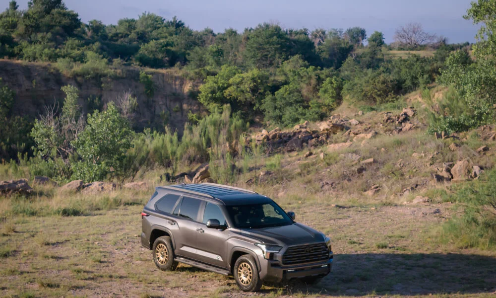
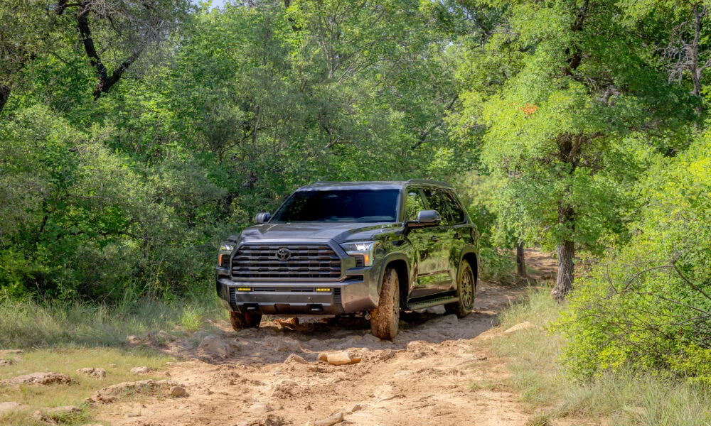
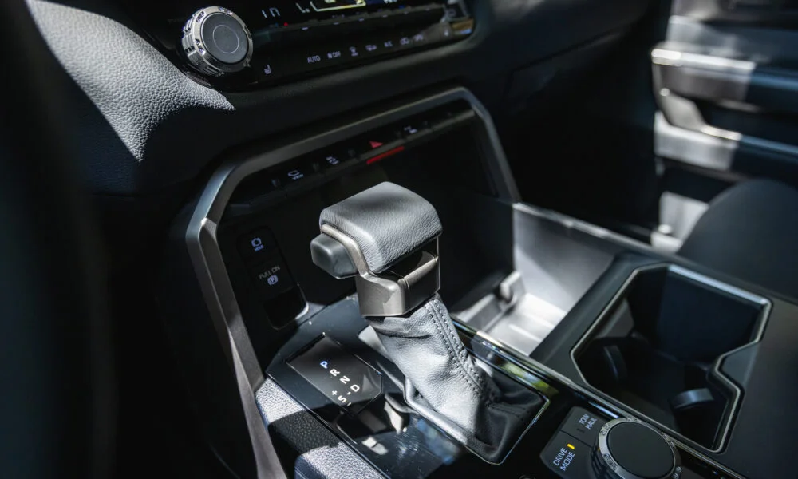

▲ 2027년형으로 페이스리프트를 거친 토요타의 대형 3열 SUV 세쿼이아. 사진은 신설된 트레일헌터 사양 ⓒ Toyota USA Newsroom
토요타가 대형 바디온프레임 SUV '세쿼이아'의 2027년형 모델을 공식 공개했습니다. 완전변경이 아닌 중기 페이스리프트 성격이지만, 외관 디자인과 인포테인먼트 시스템을 대거 손보고 오프로드 특화 트림 '트레일헌터(Trailhunter)'를 처음으로 세쿼이아 라인업에 추가한 것이 핵심입니다. 국내에는 정식 출시되지 않는 모델이지만, 토요타 공식 발표와 해외 매체 보도를 취합해 어떤 점이 달라졌는지 정리했습니다.
1. 외관 & 인포테인먼트 — 더 각진 얼굴에 14인치 화면

▲ 새로 다듬어진 그릴과 범퍼가 적용된 2027년형 세쿼이아 트레일헌터의 측후면 ⓒ Toyota USA Newsroom
토요타 프레스룸 발표에 따르면, 2027년형 세쿼이아는 "더 구조적이고 수평적인 레이아웃"을 갖춘 전면부로 재설계됐습니다. 그릴 패턴을 새로 다듬고 하단 범퍼를 더 직립형으로 바꿨으며, 사각형 안개등을 깔끔하게 통합했습니다. 상위 트림에는 그릴에 내장된 밝은 LED 라이트바와 옵션으로 RIGID Industries 보조 안개등도 마련됩니다.
실내에서 가장 큰 변화는 전 트림 기본 탑재되는 14인치 터치스크린입니다. 최신 토요타 오디오 멀티미디어 시스템이 탑재돼 스마트폰처럼 위젯을 커스터마이징할 수 있고, "헤이 토요타" 음성 비서 응답 속도도 빨라졌습니다. 여기에 20초 분량 영상을 기록하는 내장형 대시캠 '드라이브 레코더', 스마트워치·모바일 월렛으로 차량에 접근할 수 있는 디지털 키 기능까지 새로 추가돼 첨단 사양을 대폭 강화했습니다.
2. 트레일헌터 — 세쿼이아도 오프로드 전용 트림 합류

▲ 오프로드 트레일을 주행 중인 2027년형 세쿼이아 트레일헌터. 올드맨에뮤 서스펜션과 33인치 미쉐린 타이어가 적용됐다 ⓒ Toyota USA Newsroom
해외 매체 오토가이드(AutoGuide)에 따르면, 토요타는 오버랜딩 전용 서브 브랜드인 '트레일헌터'를 처음으로 세쿼이아에도 확장했습니다. 접근성을 고려해 최상위 트림이 아닌 SR5 트림을 기반으로 구성했으며, 올드맨에뮤(Old Man Emu) 서스펜션과 33인치 미쉐린 LTX 트레일 타이어, 브론즈 컬러 휠, 대형 리커버리 훅, 강화된 하부 보호판이 적용됩니다. 전자 사양으로는 멀티 터레인 셀렉트와 크롤 컨트롤, 후륜 디퍼렌셜 락까지 갖춰 본격적인 오프로드 주행을 지원합니다.
기존에도 TRD 프로 트림이 오프로드 성격을 담당해 왔지만, 트레일헌터의 합류로 세쿼이아는 툰드라 픽업트럭과 마찬가지로 오버랜딩에 특화된 별도 선택지를 갖추게 됐습니다.
3. 파워트레인 & 트림 라인업 — 그러나 남은 숙제

▲ 트레일헌터의 실내 센터 콘솔. 오프로드 주행모드 다이얼과 변속레버가 나란히 배치됐다 ⓒ Toyota USA Newsroom
파워트레인은 전 트림 공통으로 3.4리터 트윈터보 'i-FORCE MAX' 하이브리드 V6를 얹습니다. 최고출력 437마력, 최대토크 583lb-ft(약 79.7kg·m)를 내며 10단 자동변속기와 맞물립니다. 18.7kWh급 니켈수소(NiMH) 배터리를 함께 탑재해 도심 연비 21mpg, 고속도로 24mpg를 기록하며, 완충 시 최대 540마일(약 869km)까지 주행할 수 있습니다. 안전 사양으로는 전방 충돌 감지와 차선 유지, 자동 하이빔을 포함한 '토요타 세이프티 센스 4.0'이 전 트림 기본 적용되며, 캠핑·테일게이팅에 활용할 수 있는 2.4kW급 인버터도 표준 사양입니다. 트림은 SR5·트레일헌터·리미티드·플래티넘·1794 에디션·TRD 프로·캡스톤까지 총 7개로 구성됩니다.
다만 외관과 기술 사양이 대폭 강화된 것과 별개로, 세쿼이아의 근본적인 약점으로 꼽혀온 승차감과 핸들링, 3열 실내 공간, 가격 대비 상품성 문제는 이번 페이스리프트에서도 크게 개선되지 않았다는 것이 외신들의 공통된 시각입니다. 정확한 가격과 세부 제원은 2026년 가을 공개될 예정이며, 국내에는 현재까지 정식 출시 계획이 없습니다.